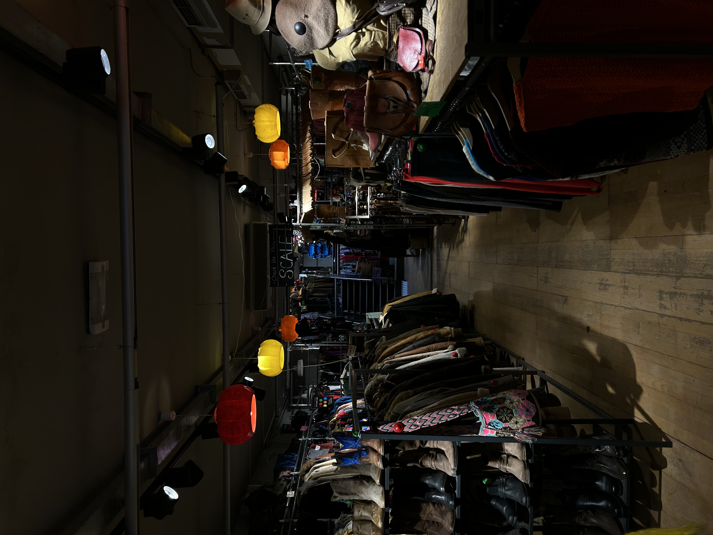

Home
Welkom bij Vondel vintage op deze website ga ik het hebben over tweedehandskleding. Ik ga het hebben over de markten, vintage winkels en hoe kleding invloed heeft op het millieu. Bij markten en winkels ga ik het hebben over mijn favoriete plekken voor vintage kleren. Bij duurzaamkleding leg ik uit hoe tweedehands kleren beter zijn voor het millieu en hoe fast fashion juist nadelig is voor het millieu. Ik heb dit onderwerp gekozen omdat ik zelf veel met het millieu bezig ben en ook heel wat tweedehands kleren heb. Ze zijn beter voor het millieu, maar daarnaast zijn ze ook nog veel unieker dan de kleren die je vaak nu ziet hangen bij grote winkel ketens.
